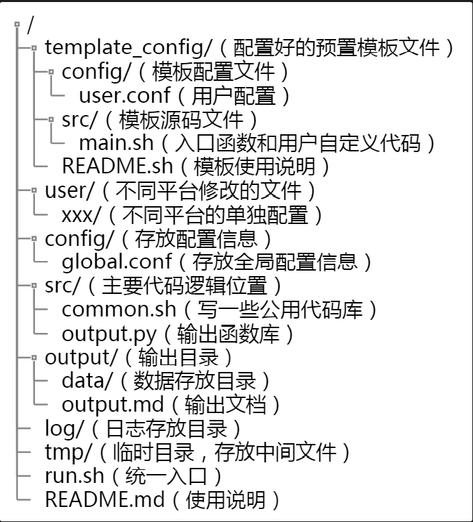

管理
团队凝聚力
| 学生团队 | 公司团队 | |
|---|---|---|
| 凝聚力源头 | 无 | 工资绩效 |
| 影响 | 无 | 收入 |
学生团队
- 一人犯错集体受罚
- 迟到可以连带受罚
- 把握好度，不生成怨恨
团建
- 去唱K
- 吃饭
- 一起出去玩
- 适当放假
人员和职责
- 项目经理
- 负责项目进度把控
- 人员和资源协调
- 组织站会
- 问题决策
- 外部对接
- 敏捷教练(敏捷开发项目需要)
- 监督和指导敏捷项目各项流程
- 敏捷培训
- PO团队
- 团队只有一个声音给出需求定义
- 关心用户体验给出界面交互设计方案
- 研发CTO
- 协助项目经理做事
- 负责版本合入并做代码质量把控和代码走读审查
- 对版本各方原理熟悉，指导各个研发人员
- 测试CTO
- 负责版本的测试人员测试用例评审
- 负责各项环境搭建和资源调度
- 架构师
- 根据界面交互设计代码语言、工具、环境
- 设计代码流程和实现方案
- 具体问题跟研发人员共同协商解决方案
- 研发过程实时跟进研发人员的方案是否符合预期
- 问题到架构师为止，保证一定有解决方案
- 安全专员
- 提供安全相关指导
- 安全测试专员
- 提供安全渗透测试用例
- 发布后出了漏洞的背锅人
进度管理
进度预估
- 工具：
WBS - 尽可能细分模块
- 预估时间，单位：
人天 - 预估好每个人的工作量是否平均
- 预估每个人的工作效率以及工作质量
- 预估时间，单位：
- 风险把控
- 每天检查进度，通过进度和计划预估风险
- 风险提出并想出相应方案解决
- 不要相信成员在时间内能完成，一定要跟进
里程碑
- 适当制定里程碑，具有时间节点
- 要完成功能
- 可完成功能
- 暂时不需要完成的功能
- 将项目划分为若干个里程碑
- 做好每个里程碑完不成的方案
效率保证
- 写大概10%的时候找负责人讲思路，防止思路不正确重写
- 晨会
- 昨天做了什么
- 今天要做什么
- 有什么问题需要协调
- 自己模块百分比
- 跟踪进度
- 目标导向
- 每天目标
- 每周目标
- 每个阶段目标
- 白板贴纸
- to do
- doing
- done
- bug跟踪记录
- 提一个bug
- 问题描述
- 问题复现步骤
- 问题现象
- 期望现象
- 问题环境
- 问题时间
- 解决一个bug
- 问题定位过程
- 问题原因描述
- 改动原理概述
- 可能影响模块
- 额外复现步骤
- 可验证的版本号
- bug列表整理到项目管理工具中
- 提一个bug
总结收获
- 周会进行总结
- 本周计划完成情况
- 总体进度完成情况
- 下周计划
- 个人总结
- 做得好的
- 做的不好的
- 对团队有什么建议和措施
- 项目结题总结报告
- 代码审查报告
- 代码扫描报告
- 系统测试报告
- 覆盖率报告
- 单元测试报告
- 验收过程记录
- 测试验收报告
- 设计及方案文档
- 代码及代码说明文档
- 使用手册及注意事项
- 培训资料及培训记录
- 结项报告
工具
- git管理工具：
gitlab - 代码扫描工具：
infer、clov - 外网穿透：
sunny - 测试自动化框架:
robot framework (python)
开发
工具
- 设计画图（流程图、类图、时序图等）: plantuml
- 接口文档和项目文档: showdoc（支持docker搭建，并支持plantuml）
- 场景梳理:
xmind
开发流程
- 需求定义
- 需求讲解、反述
- 场景梳理和工作量评估
- 正常场景和异常场景梳理
- 需求对齐，检视工作量是否可达
- 设计
- 安全编码设计
- 评审、修改
- 测试用例评审
- 编码
- 联调和自测
- 测试覆盖的场景记录
- 缺陷预防
- 代码走读
- 代码扫描和覆盖率测试
- 接口测试（自动化）
- 需求检视
- checklist（编码+安全）
- BVT测试
- 联调和覆盖测试过得可以不测
- 转测试
- 问题修改
工作量梳理
- 按照开发流程每一步进行细化梳理
- 先根据交互设计图梳理出要做的需求点，不能有遗漏，漏掉的就是加班
设计模板
1 | # 一、设计背景和目标 |
编码思想
通用工具类开发
参考目录结构

- 编码只写公用函数
/src/common.sh，对于每个平台的配置和代码单独有一个目录/user/xxx - 公用函数调用根据平台自己的入口检测返回来决定是否运行此平台配置
- 输出提供公用库
/src/output.py，平台可调用或自己定义- 考虑以
key-value的形式 - 定义优先级
- 输出各个格式提供接口（markdown、html、json、xml、excel）
- 考虑以
- 对不同平台的开发来说，将模板配置拷贝一份放入
/user/xxx下，修改其中的config和src即可
安全相关
参考安全开发专项笔记